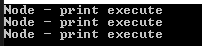
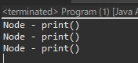

[Design pattern] 2-2. コンポジットパターン(Composite pattern)
こんにちは。明月です。
この投稿はデザインパターンのコンポジットパターン(Composite pattern)に関する説明です。
コンポジットパターン、合成パターンと呼ばれるパターンです。一つのクラスと複合クラス(つまり、リスト)を同一な構成して使うパターンという意味です。

Reference - https://en.wikipedia.org/wiki/Composite_pattern
#pragma once
#include <stdio.h>
#include <iostream>
#include <vector>
using namespace std;
// INodeインターフェース
class INode {
public:
// 抽象関数
virtual void print() = 0;
// デストラクター抽象
virtual ~INode() { }
};
// Nodeクラス、INodeを継承
class Node : public INode {
public:
// print関数再定義
virtual void print() {
// コンソールに出力
cout << "Node - print execute" << endl;
}
};
// NodeCompositeクラス、INodeを再定義
class NodeComposite : public INode {
private:
// メンバー変数
vector<INode*> _vector;
public:
// INodeタイプのインスタンスを受け取る関数
void add(INode* node) {
// vectorに追加
this->_vector.push_back(node);
}
// print関数を再定義
virtual void print() {
// vectorに格納されているインスタンスのprint関数を実行
for (INode* n : this->_vector) {
// print関数を呼び出す。
n->print();
}
}
// デストラクター
virtual ~NodeComposite() {
// vectorにあるインスタンスをすべて解除
for (INode* n : this->_vector) {
delete n;
}
}
};
int main() {
// NodeCompositeインスタンスを生成
NodeComposite composite;
// compositeインスタンスにNodeインスタンスを入れる。
composite.add(new Node());
composite.add(new Node());
composite.add(new Node());
// print関数を呼び出す。
composite.print();
return 0;
}

コンポジットパターンの基本的な型です。共通のインターフェースに一つは単一実行に関するインスタンスにprint関数を再定義して、一つは複数のインスタンスに関するprint関数を再定義して実行しました。
つまり、コンポジットクラスは同じなインターフェースから継承してリストタイプのメンバー変数を生成し、add関数を通って同じインターフェースを継承したインスタンスを受け取って同じ関数名を実行する型のパターンです。
import java.util.ArrayList;
// INodeインターフェース
interface INode {
// 抽象関数
void print();
}
// INodeインターフェースを継承したNodeクラス
class Node implements INode {
// 関数を再定義
public void print() {
// コンソールに出力
System.out.println("Node - print()");
}
}
// INodeインターフェースを継承したNodeCompositeクラス
class NodeComposite extends ArrayList<INode> implements INode {
// 関数を再定義
public void print() {
// Listにあるインスタンスを取得
for (var node : this) {
// 同じ関数名を実行
node.print();
}
}
}
public class Program {
// 実行関数
public static void main(String[] args) {
// Compositeインスタンス生成
var composite = new NodeComposite();
// Nodeインスタンスを生成して格納
composite.add(new Node());
composite.add(new Node());
composite.add(new Node());
// コンポジットインスタンスの関数を実行
composite.print();
}
}

普通はListをメンバー変数に実装しますが、Listを継承して実装することもできます。
個人的にListを継承するほうが別にadd関数やremove関数を実装する必要がなくて便利だと思いますが、仕様によりメンバー変数でListの関数を隠すことやアダプターパターンで別の型に変換する可能性もあります。
using System;
using System.Collections.Generic;
// INodeインターフェース
public interface INode
{
// 抽象関数
void Print();
}
// INodeインターフェースを継承したNode1クラス
public class Node1 : INode
{
// 関数の再定義
public void Print()
{
// コンソールに出力
Console.WriteLine("Node1");
}
}
// INodeインターフェースを継承したNode2クラス
public class Node2 : INode
{
// 関数の再定義
public void Print()
{
// コンソールに出力
Console.WriteLine("Node2");
}
}
// コンポジットパターンはListの特性を継承して使うことも可能
public class CompositeNode : List<INode>, INode
{
// 関数の再定義
public void Print()
{
// Listにあるインスタンスを取得
foreach (var node in this)
{
// 同じ関数名を実行
node.Print();
}
}
}
class Program
{
static void Main(string[] args)
{
// compositeインスタンス生成
var composite = new CompositeNode();
// INodeインターフェースを継承したインスタンスを生成して格納
composite.Add(new Node1());
composite.Add(new Node2());
// コンポジットインスタンスの関数を実行
composite.Print();
// 任意のキーを押してください
Console.WriteLine("Press any key...");
Console.ReadKey();
}
}
一つのクラスに対するパターンではありません。
INodeを継承したすべてのインスタンスを同じ構造のCompositeクラスで一括的に実行するための目的です。
ここまでデザインパターンのコンポジットパターン(Composite pattern)に関する説明でした。
ご不明なところや間違いところがあればコメントしてください。
「Study / Design pattern」の他投稿
- [Design pattern] 3-2. 責任の連鎖パターン(Chain of responsibility pattern)2021/11/04 19:27:58
- [Design pattern] 3-1. ストラテジーパターン(Strategy pattern)2021/11/03 18:38:52
- [Design pattern] 2-7. ファサードパターン(Facade pattern)2021/11/02 19:32:31
- [Design pattern] 2-6. プロキシパターン(Proxy pattern)2021/11/01 19:42:44
- [Design pattern] 2-5. フライウェイトパターン(Flyweight pattern)2021/10/29 19:48:27
- [Design pattern] 2-4. デコレーターパターン(Decorator pattern)2021/10/28 20:11:13
- [Design pattern] 2-3. ブリッジパターン(Bridge pattern)2021/10/27 20:32:21
- [Design pattern] 2-2. コンポジットパターン(Composite pattern)2021/10/27 20:30:54
- [Design pattern] 2-1. アダプターパターン(Adapter pattern)2021/10/26 19:12:40
- [Design pattern] 1-5. プロトタイプパターン(Prototype pattern)2021/10/22 19:35:45
- [Design pattern] 1-4. デザインパターンの抽象ファクトリーパターン(Abstract factory pattern)2021/10/15 19:31:03
- [Design pattern] 1-3. ファクトリーメソッドパターン(Factory method pattern)2021/06/23 19:45:37
- [Design pattern] 1-2. ビルダーパターン(Builder pattern)2021/06/11 19:06:28
- [Design pattern] 1-1. シングルトンパターン(Singleton pattern)2021/06/09 19:40:05
- [Design Pattern] デザインパターンの紹介2021/06/08 20:42:36
最新投稿
- [Java] JWT(Json Web Token)を発行、確認する方法2022/03/14 19:12:58
- [Java] 61. Spring bootでRedisデータベースを利用してセッションクラスタリング設定する方法2022/03/01 18:20:52
- [Java] 60. Spring bootでApacheの連結とロードバランシングを設定する方法2022/02/28 18:45:48
- [Java] 59. Spring bootのJPAでEntityManagerを使い方2022/02/25 18:27:48
- [Java] 58. EclipseでSpring bootのJPAを設定する方法2022/02/23 18:11:10
- [Java] 57. EclipseでSpring bootを設定する方法2022/02/22 19:04:49
- [Python] Redisデータベースに接続して使い方2022/02/21 18:23:49
- [Java] Redisデータベースを接続して使い方(Jedisライブラリ)2022/02/16 18:13:17
- [C#] Redisのデータベースを接続して使い方2022/02/15 18:46:09
- [CentOS] Redisデータベースをインストールする方法とコマンドを使い方2022/02/14 18:33:07
- [Design pattern] 3-6. ステートパターン(State pattern)2021/11/17 20:04:47
- [Design pattern] 3-5. メメントパターン(Memento pattern)2021/11/16 20:01:36
- [Design pattern] 3-4. イテレータパターン(Iterator pattern)2021/11/15 19:31:28
- [CentOS] Linux環境(CentOS)でCassandra(NoSQL DB)をインストールする方法(DBeaverブラウザでNoSQL使い方)2021/11/12 17:33:58
- [Design pattern] 3-3. コマンドパターン(Command pattern)2021/11/05 17:01:42